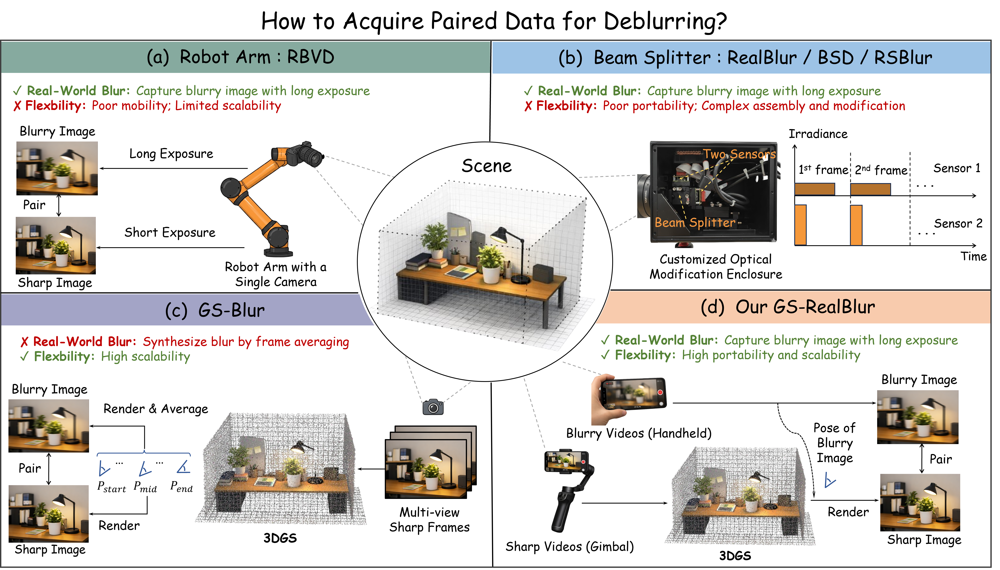
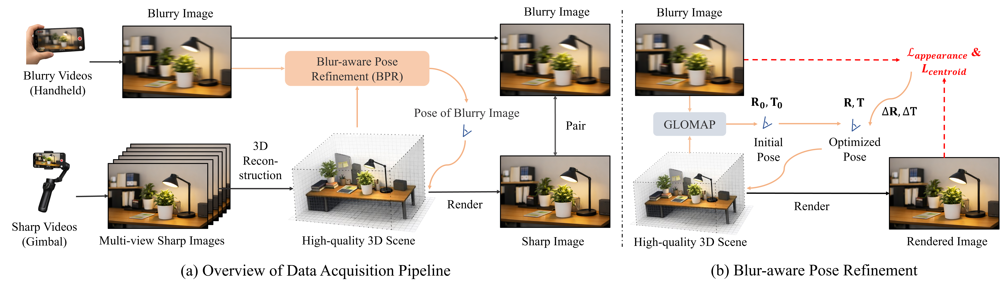
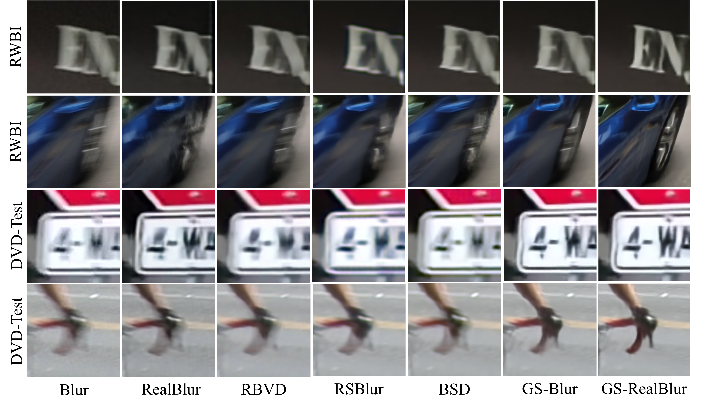
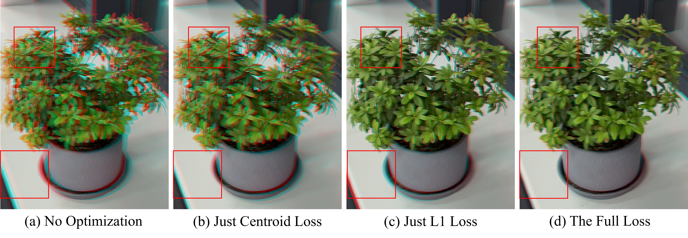

Cross-Dataset Generalization
Models trained on existing datasets exhibit substantial performance degradation across different real-world benchmarks, revealing a severe domain gap. In contrast, GS-RealBlur achieves the
Real-World Image Deblurring
Harbin Institute of Technology, Harbin, China
High-quality, large-scale paired data is essential for training learning-based image deblurring models. However, synthetic blurry images generally lack realism, while real-world captured images require complex and inflexible camera systems. In this work, we propose GS-RealBlur, a data acquisition framework for real-world image deblurring, achieving both blur realism and acquisition flexibility. Specifically, we use a handheld camera to capture blurry images, and deploy a gimbal to densely capture sharp images of the same scene. We reconstruct the 3D representation of sharp images and calibrate the camera pose of each blurry frame within this 3D. The image rendered from this 3D according to the pose serves as the sharp counterpart. To better align the rendered image with the blurry image, we introduce a Blur-aware Pose Refinement (BPR) module that refines the pose using appearance consistency and centroid alignment constraints. Leveraging GS-RealBlur, we construct a high-quality and diverse dataset. Extensive experiments demonstrate that a deblurring model trained on our dataset achieves superior generalization performance across various real-world deblurring benchmarks, consistently outperforming models trained on existing synthetic and real-world datasets.
Existing paired-data pipelines face a trade-off between blur realism and acquisition flexibility. Robot-arm and beam-splitter systems capture real blur but rely on specialized, non-portable hardware, whereas synthetic pipelines do not directly reproduce the physical blur-formation process. In contrast, GS-RealBlur captures real-world blur using portable consumer-grade devices (\eg, smartphones) and employs 3DGS to render spatially aligned sharp supervision, thereby achieving both blur realism and flexible acquisition.

GS-RealBlur first densely capture sharp-view videos with gimbal to provide sufficient scene observations for 3DGS reconstruction. Then real-world blurry images are captured in handheld mode within the spatial range covered by sharp videos. The sharp frames are used to reconstruct a 3DGS representation, while each blurry frame is initially localized within the reconstructed scene using GLOMAP. Since blur degrades feature matching and leads to inaccurate pose estimation, we further introduce BPR to refine the camera pose by jointly enforcing appearance loss and blur-kernel centroid regularizer. The optimized pose is then used to render a spatially aligned sharp image, enabling flexible acquisition of high-quality blurry--sharp pairs while preserving real-world blur.

Models trained on existing datasets exhibit substantial performance degradation across different real-world benchmarks, revealing a severe domain gap. In contrast, GS-RealBlur achieves the
Visual comparisons from the cross-dataset and supplementary experiments are collected below.
On RWBI and DVD-Test, GS-RealBlur achieves the highest scores across all six reported no-reference metrics, demonstrating robust perceptual quality beyond the training-domain benchmarks.

Blur weakens feature matching and makes SfM pose estimates unreliable. BPR refines each inaccurate pose with learnable rotation and translation offsets, optimized by appearance consistency and blur-kernel centroid alignment. The appearance consistency loss mainly reduces rotation error, while centroid alignment regularizer primarily corrects translation error, and their combination achieves the best pose accuracy and deblurring performance.
| Lappearance | Lcentroid | Pose Error TE / RE | RealBlur | RBVD | RSBlur | BSD |
|---|---|---|---|---|---|---|
| × | × | 1.036 / 1.102 | 27.38 / .880 | 26.46 / .899 | 32.61 / .854 | 31.42 / .930 |
| ✓ | × | 0.702 / 0.503 | 27.52 / .884 | 26.63 / .907 | 32.95 / .858 | 31.59 / .935 |
| × | ✓ | 0.452 / 0.841 | 27.43 / .883 | 26.52 / .903 | 32.75 / .856 | 31.51 / .934 |
| ✓ | ✓ | 0.445 / 0.479 | 27.57 / .885 | 26.67 / .908 | 33.13 / .861 | 31.63 / .936 |

Drag each divider to compare the blurry observation with its aligned ground truth.